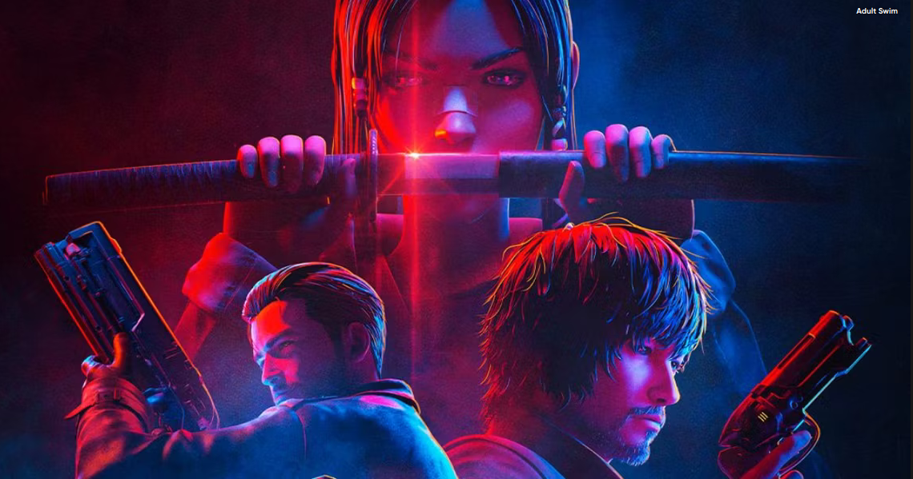
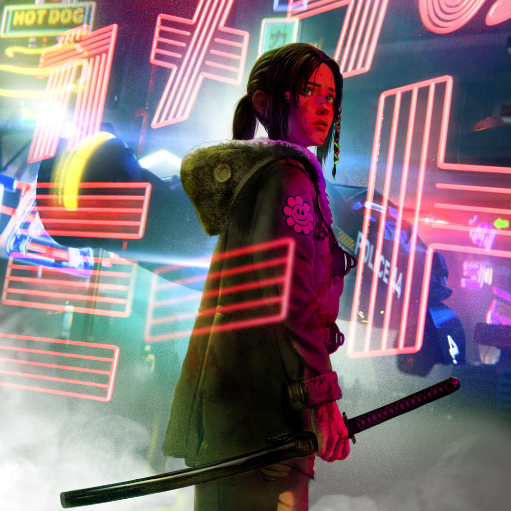
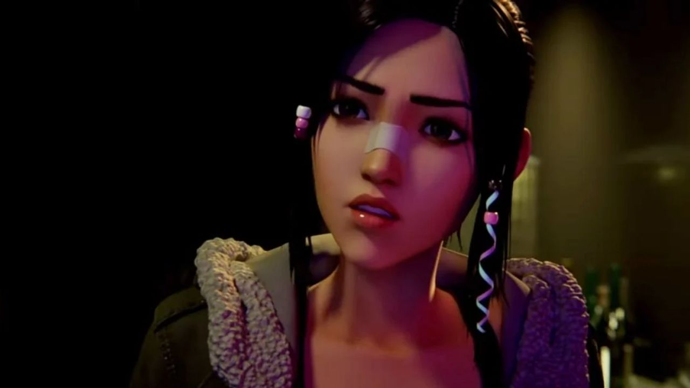
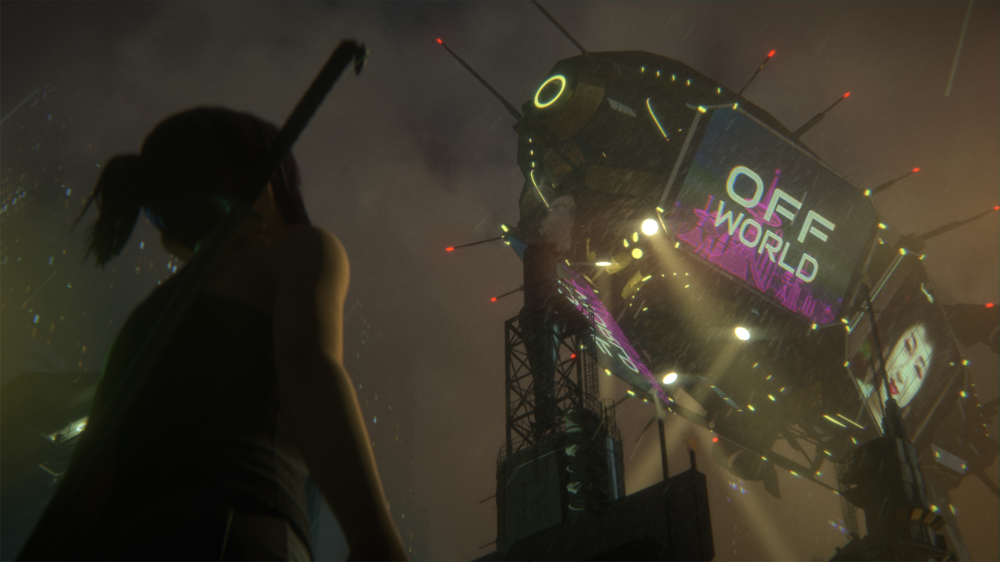
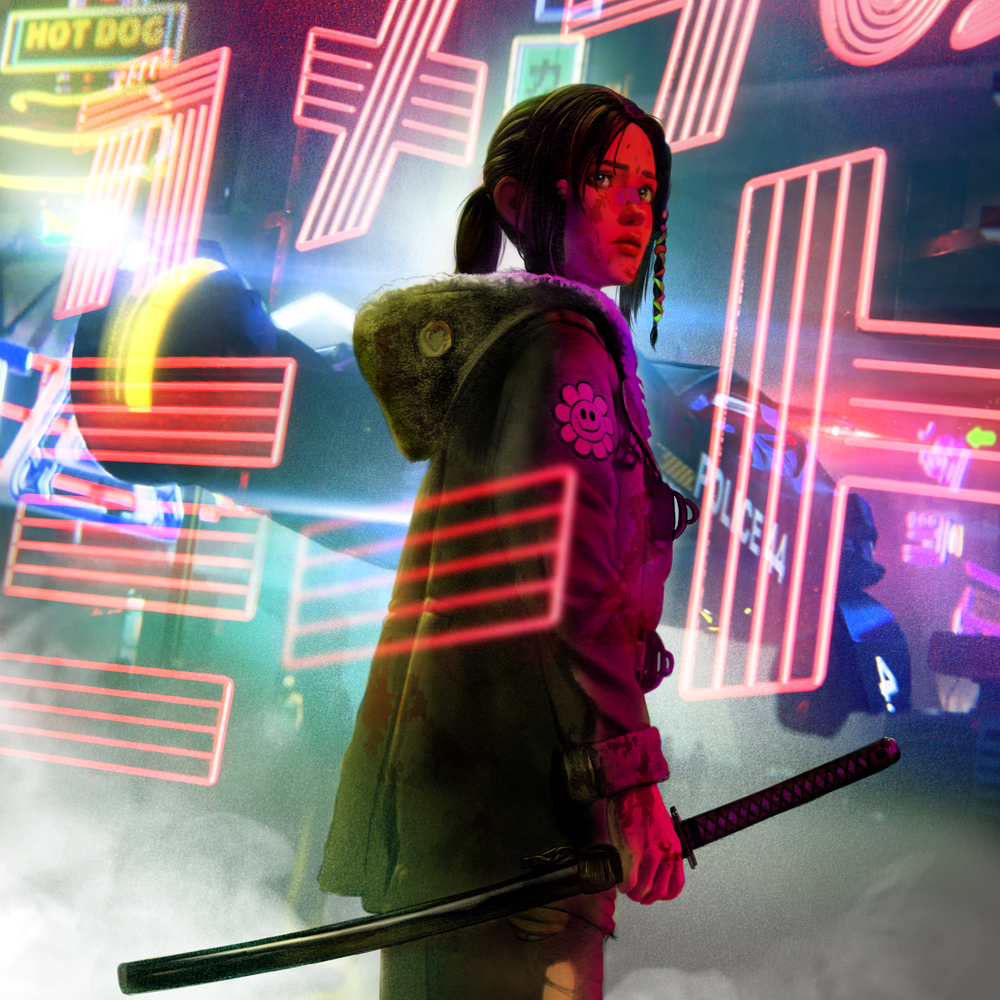
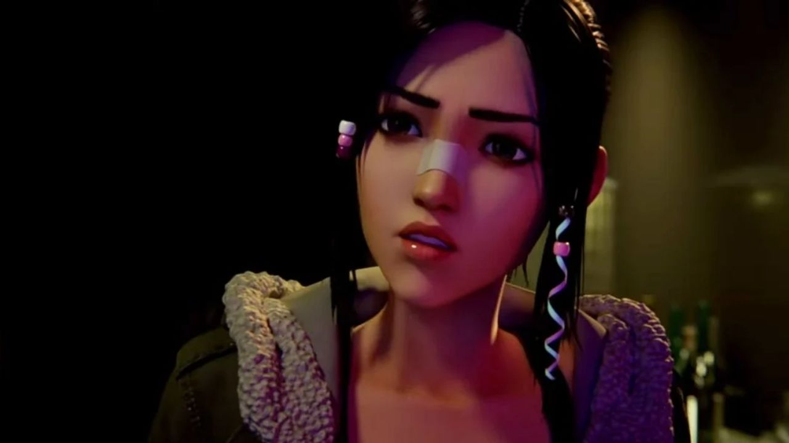
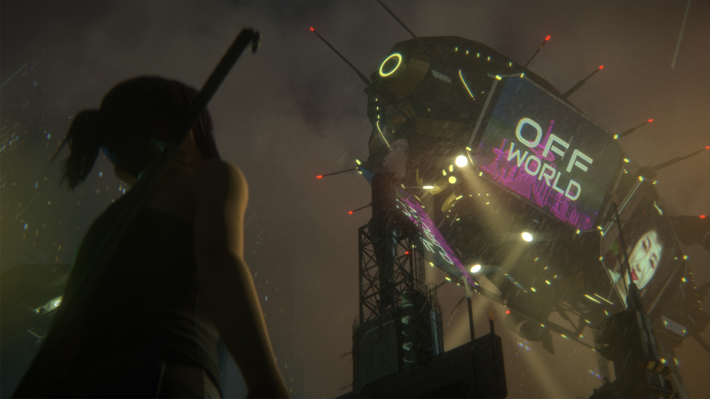

And what was that second hoverbike doing there? Here are some possible new storylines we could see in Blade Runner: Black Lotus season 2.
Spoiler Warning: Blade Runner: Black Lotus
Blade Runner: Black Lotus has a pretty ambiguous ending, despite it tying up all its loose ends. And the series, as of right now, hasn't been renewed for another season. But it hasn't been canceled either. Still, one wonders if the writers left any room for a second season. All the people Elle had originally marked for revenge are dead. The Blade Runner Marlowe was shot and took a tumble through a glass ceiling. Water Lily was killed by her master. And J sadly killed himself in the final explosion for what seemed like no other reason than to be dramatic. The only significant characters left alive from the series (besides Black Lotus) are Officer Davis, Niander Wallace Jr., and Doc Badger. The little falling action we get after the explosion at the Tyrell archives doesn't really set up any new stories. It's more of a "where are they now" segment than anything else. But there are moments of ambiguity that imply that those who made the show would like a second season to happen. Though now bound to a wheelchair, Officer Davis appears to continue her investigation of the Wallace corporation. Niander Wallace Jr., who was blinded by Elle's sword, leaves us with the statement, "I see nothing but possibilities." And there are no clues that Doc Badger's life has changed at all. But, as Elle rides off on the hoverbike away from LA, we see a second bike begin to pull up beside her. With that, here are some possible new storylines we could see in Blade Runner: Black Lotus season 2.
Blade Runner: Black Lotus was very intent on telling its own story, but it remained in the world of the Blade Runner timeline. Black Lotus is set in 2032, closest in line to the 2036: Nexus Dawn short film, which is a slight prequel to Blade Runner 2049. Though the two stories are not connected, save for the appearance of a blind Niander Wallace, it does show the first point in the timeline when Wallace demonstrates his Nexus-9 replicants. So, assuming that any story season 2 might involve anything going on in Los Angeles or Niander Wallace in general, the writers have a four-year gap in which to tell it. We saw in Blade Runner 2049 that Doc Badger is right where Elle left him, with a thriving business that is able to help Agent K. And Niander Wallace is still very much alive and in charge of the Wallace corporation. So a story pitting Officer Davis against Wallace will end badly. Just about any premise to a story will have to begin as a full reset from the first season and would likely be separate from the normal Blade Runner canon. But there are a few perfectly logical possibilities to create an extended universe, or even just a limited run starring Black Lotus.
The most intriguing thing that happens in the finale of Black Lotus is the second hoverbike that appears in the shot as Elle fly’s hers away from Los Angeles. It’s probably the most ambiguous part of the ending. It’s possible it could have been an artistic choice, which is perfectly valid. It almost looks like a giant mirror in the desert reflecting Elle as she flies away. It’s a nice way to visually symbolize consciousness and identity, which are two things that Elle has spent the series trying to prove that she possesses, like any replicant. But as far as “infinite possibilities” go, it could have been anything. There is a quiet buzz on the internet saying it could have been another replicant whom Elle had connected with somehow. On the other hand, it could be another Blade Runner sent to hunt her down. But nobody really knows, and surprisingly enough, it seems that not very many people care. This seems like the only open detail, tiny though it may be, that was created to raise questions rather than answer them. But given that Elle flies away from LA successfully, she could go anywhere she wants. And given that the writers continue to follow Elle and not have Wallace experiment with some type of Black Lotus replicant program, a second season in the series would be the first in the Blade Runner continuity to take place outside the city of Los Angeles. This is notable because while it’s assumed every city looks like LA, we’ve never actually seen another one. There are a lot of places that the second season could go. A breach from the Blade Runner canon might actually do the franchise some good. It would create another universe comparable to Star Trek or Marvel in which a wider range of people would be free to create. Black Lotus could meet Sapper Morton and try to build an underground railroad for new replicants. She could attempt to sabotage the Blade Runner program, taking her hunt on the offensive. She could even try to escape off-world. There are infinite possibilities.
 




